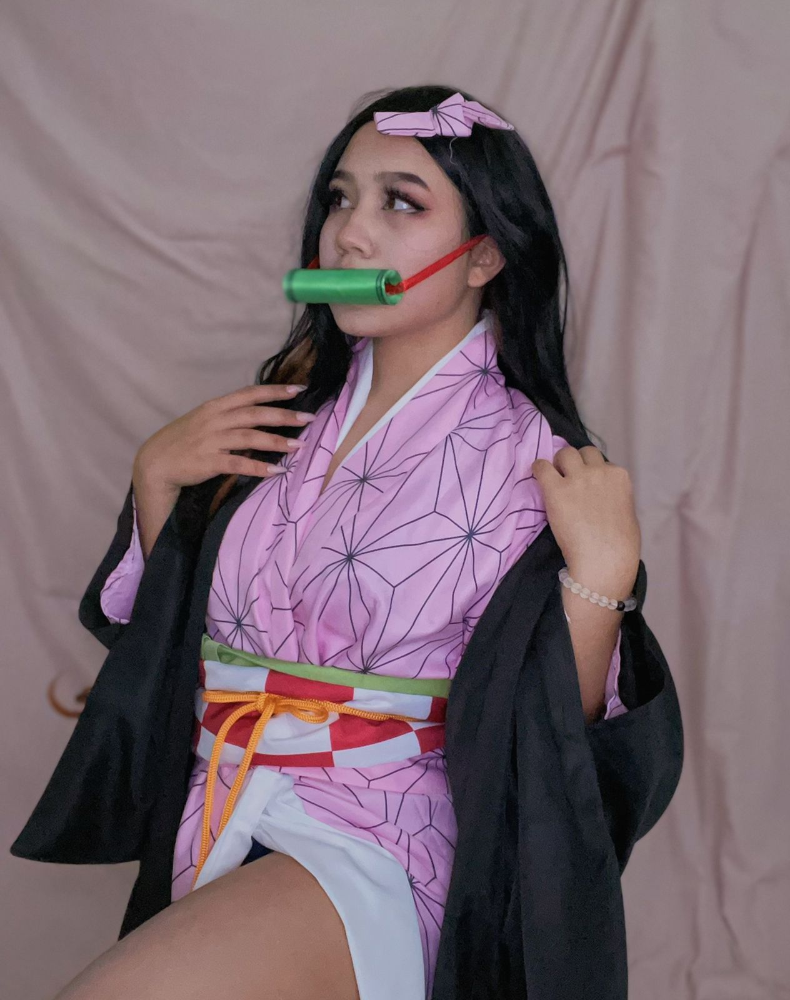

Momo Kun
Cosas sobre mí:
- Me llamo Clara Itzé Cazares Camacho, pero muchos
me dicen "Momo Kun" porque en secundaria yo estaba
demasiado obsecionada con un anime llamdo "momokuri"
donde salía un chico que tenía rasgos similares a los
míos, de ahí comenzaron a llamarme de esa manera en tono
burlesco pero al pasar los meses se me quedó como un apodo.
A día de hoy casi nadie me llama así en público, pero yo decidí
integrarlo a mi día día al ponerlo en mis redes sociales.
- Soy muy fanática de los animales, en especial los dómesticos,
como los gatos, perros, hamsters, etc. En mi casa cuento con
3 perritos y 2 gatitos a los cuales cuido con toda mi alma porque
los considero como parte de mi familia.
- Amo hacer cosplays de varios personajes de anime, el problema
es que apenas estoy empezando y no cuento con el material necesario
que se requiere. Actualmente, solo tengo dos cosplays, uno es de nezuko
de "kimetsu no yaiba" o "demon slayer" y otro de una maid.
Tengo pensado en empezar a trabajar para poder seguir comprando estos, el
siguiente cosplay que tengo pensado en hacer es de Kanna de "kobayashi san"
o de Rei de "evangelion"; aunque, en un futuro quiero empezar a coser mis propios trajes.